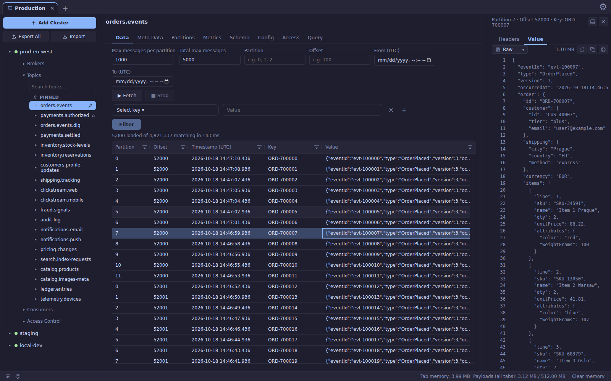
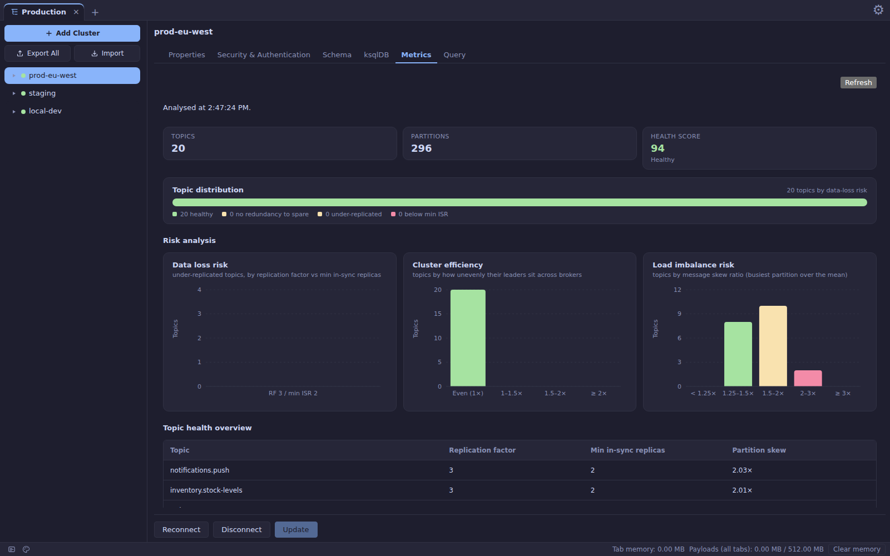
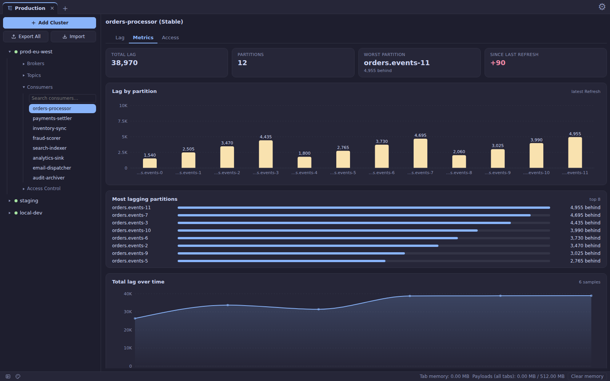
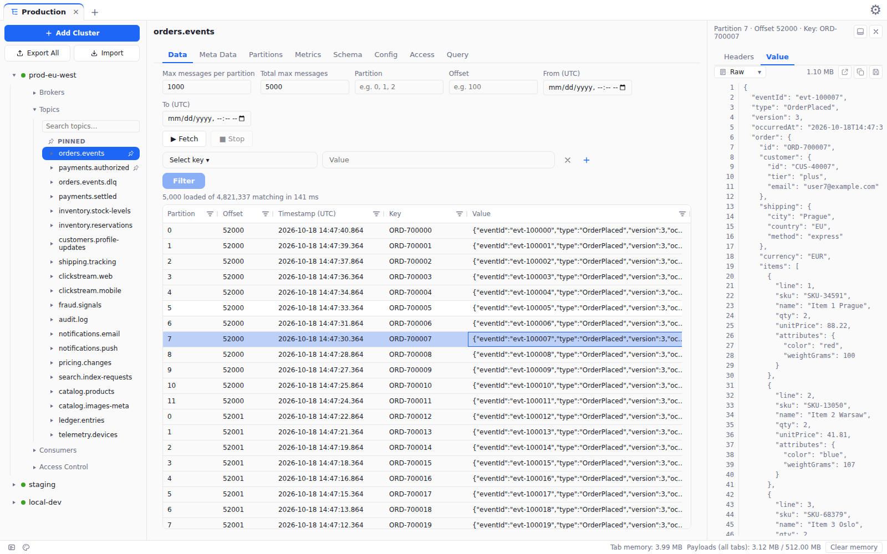

Thousands of messages. Large payloads. A window that keeps scrolling. Free and open source for macOS, Windows and Linux.
Download View on GitHub
Most Kafka GUIs struggle on a real topic. Salty is designed around that case.
Rows appear as they arrive, so you're never waiting on the last message.
Open, scroll and expand big documents without freezing the window.
A configurable limit, a live usage readout and a one-click clear.
Decode with your Schema Registry or a pasted schema.
See who is behind, by how much, and what each principal may do.
Every topic scored for replication, leader spread and skew.
PLAINTEXT, SSL and SASL, with exports that never carry secrets.
Publishing is off per connection until you turn it on.
Light or dark, with a resizable multi-pane layout.



Screenshots show a seeded demo cluster with made-up data.
Installers for every platform are published on the releases page.